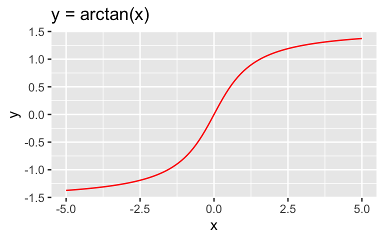
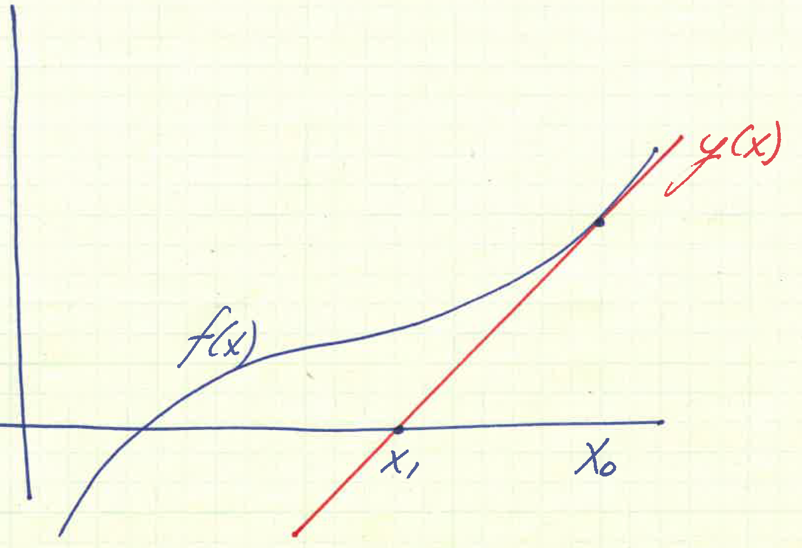

8.1 Newton’s Method
In the last lecture we saw that while the bisection method was robust and would always converge to a solution given the right set of initial values, it could exhibit slow convergence. As a result, most solvers used other types of root-finding algorithms. In this section we will study two such methods that can provide much faster convergence to a root.
Newton’s method is likely the most popular and certainly the most powerful method for solving nonlinear equations (Meza 2011). The idea behind Newton’s method is to use the slope of the function at the current iterate to compute a new iterate. Naturally, this requires that we first assume that the given function \(f(x)\) is differentiable.
Using this idea let’s solve for the root of the linear model, i.e.
\[ \begin{aligned} f^{\prime}(x_0)(x-x_0) + f(x_0) &= 0,\\ \implies x^\star = x_0 - \frac{f(x_0)}{f^{\prime}(x_0)}. \end{aligned} \]
We can then set \(x_1 = x^\star\) as the next iterate in our sequence and repeat the process. This gives us the general procedure for Newton’s method:
Newton’s Method
\[ x_{k+1} = x_k - \frac{f(x_k)}{f^{\prime}(x_k)}, \quad k=0,1, \ldots \tag{8.2}\]
We could have derived the same equation by just noting that we could take the derivative at the current iterate and use that to set up a linear equation, which we can solve for the new iterate.
.
Finally, we will also note in passing that another derivation (which we went through in class) was to use Taylor’s theorem to approximate our function \(f(x)\) out to the first degree with a remainder term that included the second derivative. We then chose to ignore the second derivative term based on the argument that when we are near the solution the term would be small. When we solved for our new iterate, we derived the same equation for Newton’s method.
Remark
A natural question to ask is under what conditions does Newton’s method converge. In fact, it isn’t hard to show that if the initial point \(x_0\) is not chosen properly (i.e. close enough to a root), Newton’s method will diverge. A typical example would be \(y = \arctan(x),\) where if \(x_0\) isn’t close enough to the root the iterates quickly diverge to infinity.
Stopping criteria for Newton’s method (and all of its variants) are similar to the ones discussed in the section on Bisection Method (Section 7.2.)
Example 8.1 Let \(f(x) = x^6- x - 1 = 0\) and let \(x_0 = 1.5\). It is easy to verify that one root is given by \(x^{*} = 1.134724.\)
To use Newton’s method we first need to calculate the derivative - \(f^{\prime}(x)= 6x^5 -1.\)
Using Equation 8.2 allows us to compute the \(k+1\) iteration:
\[ \begin{aligned} x_{k+1} &= x_k - \frac{f(x_k)}{f^{\prime}(x_k)}, \\ x_{k+1} &= x_k - \frac{x^6_k- x_k - 1 }{6x^5_k- 1 }. \end{aligned} \]
Proceeding in the natural way from \(x_0\), we can generate the following sequence of iterates:
| \(k\) | \(x_k\) | |
| 0 | 1.5 | 1.5 |
| 1 | \(x_{1} = x_0 - \frac{x^6_0- x_0 - 1 }{6x^5_0- 1 } = 1.5 - \frac{8.8906}{44.5625}\) | 1.3005 |
| 2 | \(x_{2} = x_1 - \frac{x^6_1- x_1 - 1 }{6x^5_1- 1 } = 1.3005 - \frac{2.5373}{21.3197}\) | 1.1815 |
| 3 | \(x_{3} = x_2 - \frac{x^6_2- x_2 - 1 }{6x^5_2- 1 } = 1.1815 - \frac{0.5387}{12.8140}\) | 1.1395 |
Notice that after only 3 iterations, the iterates is already correct to 3 significant digits.
Several questions one might consider at this point include:
Under what conditions might we expect (local) convergence? Here by local we mean that the algorithm will converge if we start sufficiently close to a root. We will define this more carefully later.
If Newton’s method converges, how fast can we expect the convergence to be?
8.2 Error Analysis for Newton’s Method
Let’s consider the Taylor expansion about \(x = x^*\).
\[ 0 = f(x_k) + (x^* - x_k) f^{\prime}(x_k) + \frac{(x^* - x_k)^2}{2} f^{\prime\prime}(\xi). \]
Dividing by \(f^\prime(x_k)\) (we will assume for the time being that it’s not equal to zero for any \(x_k\)) we get:
\[ 0 = \frac{f(x_k)}{f^{\prime}(x_k)} + (x^* - x_k) + \frac{f^{\prime\prime}(\xi)}{f^{\prime}(x_k)} \frac{(x^* - x_k)^2}{2} . \]
Using the equation for Newton’s method we see that the first term is nothing but \(x_k - x_{k+1}\) and substituting into the above equation we get:
\[ 0 = x_k - x_{k+1} + (x^* - x_k) + \frac{f^{\prime\prime}(\xi)}{f^{\prime}(x_k)} \frac{(x^* - x_k)^2}{2} . \] We see that the \(x_k\) terms cancel out. Rearranging to put the error on the left-hand side of the equation yields:
\[ x^* - x_{k+1} = \frac{f^{\prime\prime}(\xi)}{2 f^{\prime}(x_k)} \ (x^* - x_k)^2. \tag{8.3}\]
The quantity on the left-hand side of the equation is just the error at the \(k+1\) iteration, while the last term on the right-hand side is the error at the \(k\) iteration. As a result, we can interpret the equation to mean that the error at the \(k+1\) iteration is proportional to the square of the error at the \(k\) iteration. This type of error bound is called quadratic convergence (see Definition 11.1).
Remark
If \(f \in C^2[a,b]\) and \(f^\prime(x^*) = 0\), then Newton’s method still converges but just not as rapidly. Consider for example \(f(x) = x^4,\) which has a root at \(x=0\), but where the first derivative is also equal to 0.
Summary for Newton’s Method
| Advantages | Disadvantages |
|---|---|
| Doesn’t require interval with function sign change | Need to have derivatives |
| Fast convergence rate – quadratic | May not converge from all starting points |
| Can generalize to higher dimension | Can be expensive (especially in higher dimensions) |
Code
today <- Sys.Date()
format(today, format="Revised: %B %d %Y")[1] "Revised: May 07 2024"